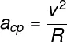
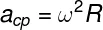

Fisica
Aceleração centrípeta
"A aceleração centrípeta é representada por um vetor que aponta em direção ao centro de uma trajetória circular. Por tratar-se de uma aceleração, sua unidade de medida é o m/s², entretanto, diferentemente da aceleração média e da aceleração instantânea, a aceleração centrípeta não é caracterizada como uma variação de velocidade, mas sim como uma variação na direção e no sentido da velocidade."
"O vetor da aceleração centrípeta é tangente à trajetória do corpo, além disso, é perpendicular à direção da velocidade escalar, também chamada de velocidade tangencial."
Formula da aceleração centrípeta
"Existe mais de uma fórmula usada para calcular a aceleração centrípeta, conheça cada uma:"
v – velocidade
R – raio da curva
"Além dessa, há uma fórmula de aceleração centrípeta que pode ser calculada em termos da velocidade angular, ω, observe:"
v – velocidade
R – raio da curva